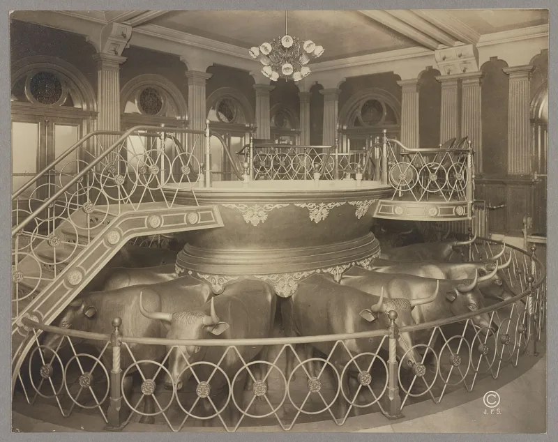

Moroni 8: infant baptism is 'solemn mockery'
ContestedLDS scholars have a real answer here. Say so before your friend does.
What Moroni 8 says
That little children "are not capable of committing sin." That infant baptism is "solemn mockery before God." And that anyone who thinks children need baptism "must go down to hell" if he dies in that thought. See Moroni 8:8-23.
What the Bible is usually quoted back
Psalm 51:5 says we are sinful from conception. Ephesians 2:3 calls us "by nature the children of wrath." Romans 5:12 and 18-19 say we are condemned in Adam.
Their answer, at full strength
FAIR makes three points, and they land. The Bible never commands infant baptism and never shows one.
Baptists and most evangelicals end up where Moroni does. Second, the idea that we inherit Adam's guilt — and not just a fallen nature — comes from Augustine.
The Eastern Orthodox reject it to this day. Third, Latter-day Saints teach that Christ covers Adam's fall for children, with no conditions.
Moroni 8:8 says the curse of Adam is taken from them in him.
Where the criticism still stands
Not on infant baptism. Christians have argued that one among themselves for centuries.
It stands on two narrower points. Moroni 8 sends almost every Christian before the Reformation to hell.
No verse in the Bible allows that. And a record set in the fourth century is arguing a fight that belongs to Pelagius, to Augustine, and to revival preaching in the 1800s.
How strong is this argument?
Do not use the simple version. If you argue Bible against Book of Mormon here, you will be arguing against a lot of Christians too.
Use the narrow version or leave it.
What to say
"I don't baptise babies either. But why does Moroni send everyone who does to hell?"


How they answer this — at its strongest
The Bible never commands infant baptism, and Baptists land where Moroni does.
FAIR makes three points, and they land. First, the Bible never commands infant baptism and never shows one. Baptists and most evangelicals agree with Moroni's practical result. So this is not simply Bible against Book of Mormon. It tracks a fight among Christians.
Second, treating original sin as inherited guilt comes from Augustine. Eastern Orthodoxy rejects inherited guilt and keeps only a fallen nature and death. Psalm 51:5 is David's poetry about how deep sin runs, not a rule about infant guilt.
Third, Latter-day Saints teach that Christ's atonement covers Adam's fall for children with no conditions. Moroni 8:8 says the curse of Adam is taken from them in him. So children are redeemed, not merely innocent.
The verdict
Do not use the simple version, or you will be arguing against many Christians too.
As a proof-text fight the critics overreach. Infant baptism is disputed among Bible-believing Christians. So is inherited guilt. The Latter-day Saint reply finds real allies for parts of its case.
What survives is narrower but real. Moroni 8 sends infant-baptisers to hell. That condemns nearly all Christians before the Reformation, with a harshness no Bible text allows.
And the chapter argues a fight that came after the Bible, inside a text set in fourth-century America. The fight is Pelagius against Augustine, plus revival preaching in the 1800s. That shades into a question about where the text came from.
Sources
- Department of Christian Defense, Book of Mormon theology analyses
- LDS Scripture Teachings, 'Moroni 8, Pelagius, and Questions about Infant Baptism'
- Improvement Era (critical analysis), 'When Rhetoric Overpowers Revelation: Moroni 8'